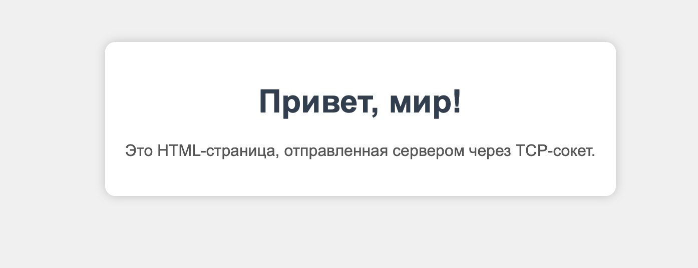

Задание 3: HTTP-сервер на сокетах
Условие
Реализовать серверную часть приложения. Клиент подключается к серверу, и в ответ получает HTTP-сообщение, содержащее HTML-страницу, которая сервер подгружает из файла index.html.
Требования:
- Обязательно использовать библиотеку
socket
Код программы
Сервер (server.py)
import socket
import threading
HOST = "127.0.0.1"
PORT = 8080
def handle_client(conn, addr):
print(f"[+] Подключен клиент {addr}")
try:
request = conn.recv(1024).decode()
print("Запрос:\n", request)
try:
with open("index.html", "r", encoding="utf-8") as f:
body = f.read()
except FileNotFoundError:
body = "<h1>404 Not Found</h1>"
response = (
"HTTP/1.1 200 OK\r\n"
"Content-Type: text/html; charset=utf-8\r\n"
f"Content-Length: {len(body.encode('utf-8'))}\r\n"
"\r\n"
f"{body}"
)
conn.sendall(response.encode("utf-8"))
except Exception as e:
print("Ошибка:", e)
finally:
conn.close()
print(f"[-] Клиент {addr} отключился")
with socket.socket(socket.AF_INET, socket.SOCK_STREAM) as server_socket:
server_socket.setsockopt(socket.SOL_SOCKET, socket.SO_REUSEADDR, 1)
server_socket.bind((HOST, PORT))
server_socket.listen()
print(f"HTTP-сервер запущен: http://{HOST}:{PORT}")
while True:
conn, addr = server_socket.accept()
thread = threading.Thread(target=handle_client, args=(conn, addr), daemon=True)
thread.start()
Клиент (client.py)
import socket
HOST = "127.0.0.1"
PORT = 8080
request = "GET / HTTP/1.1\r\nHost: localhost\r\n\r\n"
with socket.socket(socket.AF_INET, socket.SOCK_STREAM) as client_socket:
client_socket.connect((HOST, PORT))
client_socket.sendall(request.encode())
response = client_socket.recv(4096).decode()
print("Ответ сервера:\n")
print(response)
HTML-страница (index.html)
<!DOCTYPE html>
<html lang="ru">
<head>
<meta charset="UTF-8">
<title>Моя первая страница</title>
<style>
body {
font-family: Arial, sans-serif;
background: #f0f0f0;
text-align: center;
margin: 50px;
}
.container {
background: white;
padding: 20px;
border-radius: 10px;
box-shadow: 0 0 10px rgba(0,0,0,0.2);
display: inline-block;
}
h1 {
color: #2c3e50;
}
p {
color: #555;
}
</style>
</head>
<body>
<div class="container">
<h1>Привет, мир!</h1>
<p>Это HTML-страница, отправленная сервером через TCP-сокет.</p>
</div>
</body>
</html>
Запуск
- Необходимо открыть два терминала.
- В первом запустите сервер:
python server.py - Во втором терминале запустите клиент:
python client.py - Перейдите по ссылке, указанной в терминале.
Результат
Cо стороны сервера видим следующее: 
Cо стороны клиента видим: 
Переходим по адресу, указанному в терминале: http://127.0.0.1:8080
Видим HTML-страницу, полученную при помощи сервера: 
Выводы
-
Реализован простой HTTP-сервер с использованием библиотеки socket.
-
Сервер принимает соединения по TCP и отправляет клиенту корректный HTTP-ответ.
-
В качестве содержимого ответа подгружается HTML-страница с минимальным оформлением.
-
Работа позволила понять, как на низком уровне работает взаимодействие клиента и сервера через HTTP.